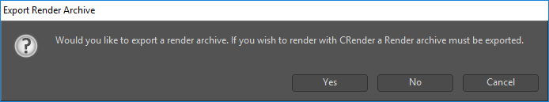
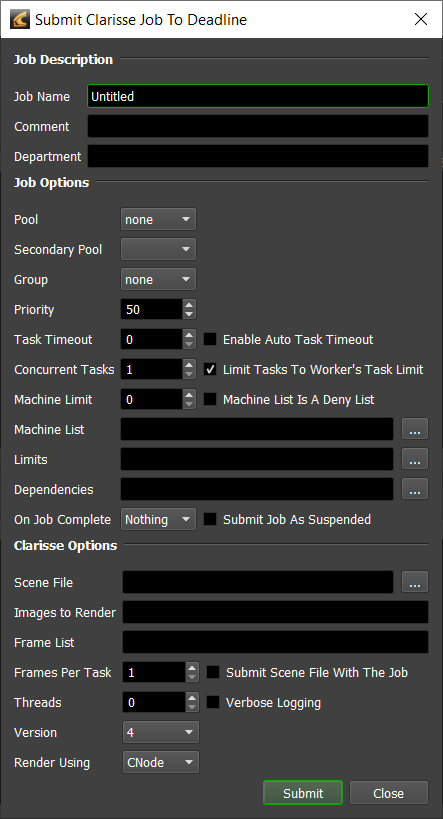
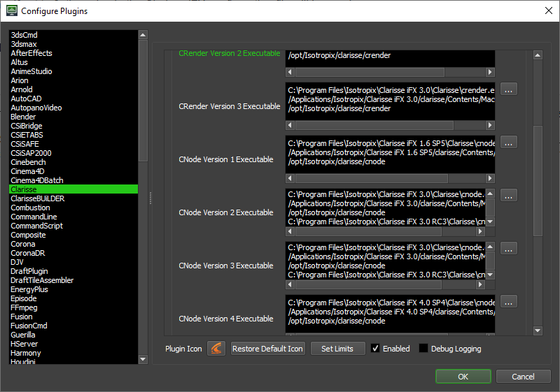

Clarisse iFX¶
Job Submission¶
You can submit jobs from within Clarisse iFX by installing the integrated submission script, or you can submit them from the Monitor. The instructions for installing the integrated submission script can be found further down this page.
To submit from within Clarisse iFX, click on the custom toolbar item you created during the integrated submission script setup. You will then be asked if you wish to export the render archive to render with crender.
After you specify the render archive file, the submitter will come up with the Render Archive and Frame List fields already populated.
Note that if you are submitting from the Monitor, you will have to manually export your render archive from inside Clarisse iFX, and then browse to the Render Archive file in the Monitor submitter.
Submission Options¶
The general Deadline options are explained in the Job Submission documentation. The Clarisse iFX specific options are:
Threads: The number of threads to use for rendering. If set to 0, the value in the Clarisse iFX configuration file will be used.
Verbose Logging: Enables verbose logging during rendering.
Version: The version of Clarisse iFX to render with.
Render Using: Whether the Clarisse iFX job should be rendered using crender or cnode.
Plugin Configuration¶
You can configure the Clarisse iFX plugin settings from the Monitor. While in power user mode, select Tools -> Configure Plugins and select the Clarisse plugin from the list on the left.
Note, if the executable supports a MAJOR.MINOR.REVISION (9.0.123) numbering system in its path, then you will need to configure the explicit exe path to the particular revision that you have installed on your machines. Deadline does not track every possible revision available or indeed where it might be custom installed to, so a studio should verify their exe paths are correct for each application version they choose to use with Deadline. Multiple exe paths can still be declared and the first one that is found on a particular Worker on a particular platform will be used from the exe list.
Render Executables
CRender Executable: The path to the Clarisse iFX’s crender executable file used for rendering. Enter alternative paths on separate lines. Different executable paths can be configured for each version installed on your render nodes. (Clarisse iFX version 3.6 and lower only)
CNode Executable: The path to the Clarisse iFX’s cnode executable file used for rendering. Enter alternative paths on separate lines. Different executable paths can be configured for each version installed on your render nodes.
Configuration Options
Global Config File: A global configuration file to be used for rendering. If left blank, the Clarisse.cfg file in the user home directory will be used instead.
Module Paths: Additional paths to search for modules (one path per line).
Search Paths: Additional paths to search for includes (one path per line).
Integrated Submission Script Setup¶
The following procedures describe how to install the integrated Clarisse iFX submission script. This script allows for submitting Clarisse iFX render jobs to Deadline directly from within the Clarisse iFX editing GUI.
You can either run the Submitter installer or manually install the submission script.
Submitter Installer¶
Run the Submitter Installer located at
<Repository>/submission/Clarisse/Installers.
Manual Installation¶
Copy the script DeadlineClarisseClient.py from
[Repository]\submission\Clarisse\Clientto your local machine. The submitter installer copies the script to:%localappdata%\Thinkbox\Deadline[VERSION]\submitters\ClarisseSubmitter (where [VERSION] is the major version of Deadline) Optional: Copy the ``SubmitToDeadline.png`` icon from ``[Repository]\submission\Clarisse\Client`` to the same location
In Clarisse iFX, right-click on the toolbar at the top and select Add Item.
In the Add New Item dialog, set the following properties:
Title: Submit To Deadline
Category: Custom
Category Custom: Deadline
Script Path: Choose the
DeadlineClarisseClient.pyscript that you copied to your local machine.Icon Path (Optional): Choose the
SubmitToDeadline.pngimage that you copied to your local machine.
Click Add, and you should now see a Deadline tab in the toolbar with a button that you can click on to submit the job.
FAQ¶
Which versions of Clarisse iFX are supported?
Either the “crender” or “cnode” application can be used for rendering, so any version of Clarisse iFX that includes this application is supported.
Note: Clarisse no longer supports CRender after Clarisse iFX 3.6
Error Messages and Meanings¶
This is a collection of known Clarisse iFX error messages and their meanings, as well as possible solutions. We want to keep this list as up to date as possible, so if you run into an error message that isn’t listed here, please visit the Thinkbox Help Centre and let us know.
Currently, no error messages have been reported for this plugin.

{kind=link}
{kind=link}
{kind=link}
{kind=link}
{kind=link}
{kind=link}